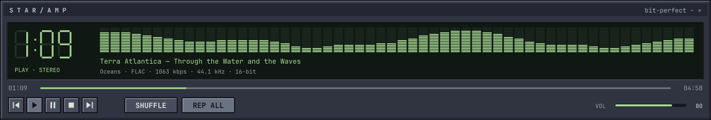
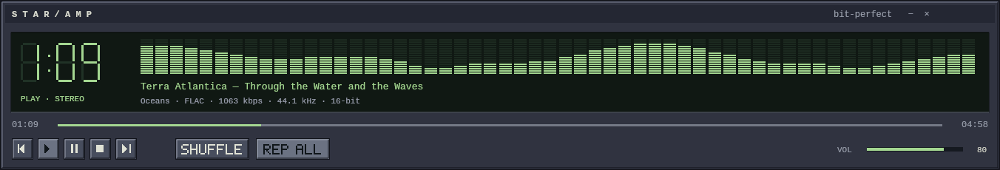
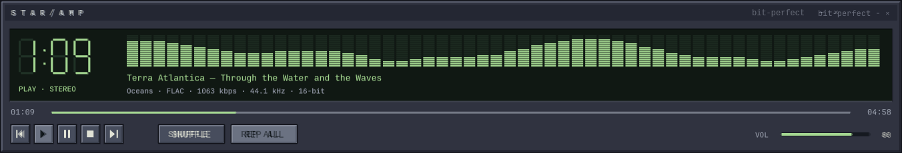
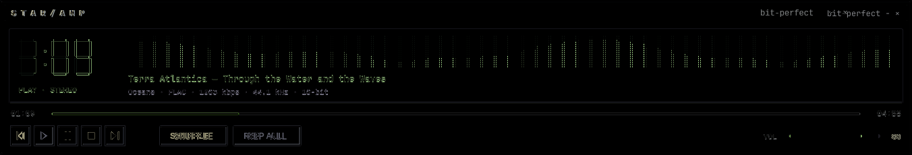
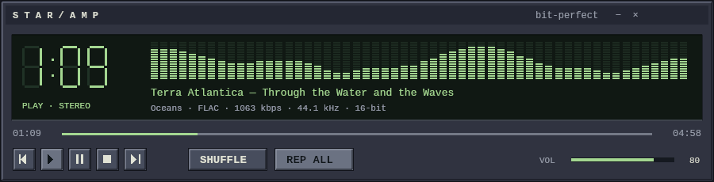
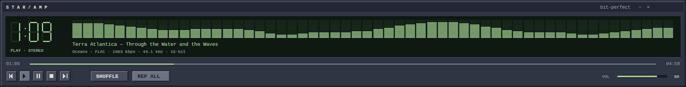

An isolated rendering proof, not the installed player. Images display at their actual CSS pixel size; scroll horizontally on smaller screens. Compare at browser zoom 100%. This is the first visual gate, not a claim of exact fidelity.


The bitmap variant is visibly heavier than the reference. It is a comparison candidate, not the selected typography. Native body text remains shaped Unicode text.




Button bevel geometry, exact text baselines, transport icon alignment and clock rasterization still need refinement. The live Kitty proof, pointer states, full 2x-density rendering, Mac Retina validation, theme asset recoloring and efficient SSH asset transport follow. No changes to FOLD or to the installed AMP interface.